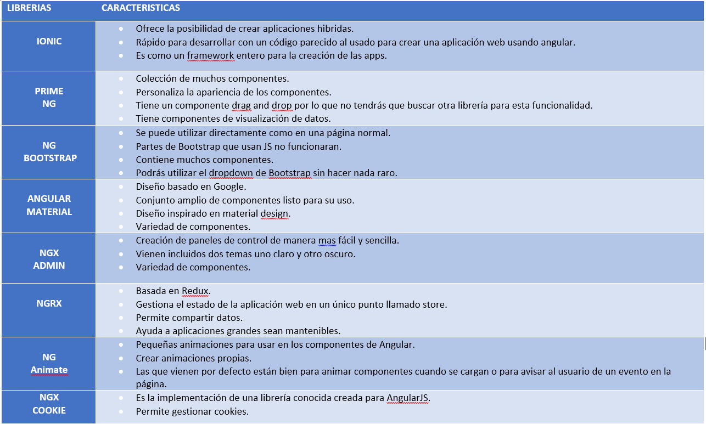

Librerías
Características
IONIC
-
Ofrece la posibilidad de crear aplicaciones hibridas.
-
Rápido para desarrollar con un código parecido al usado para crear una aplicación web usando angular.
-
Es como un framework entero para la creación de las apps.
Prime NG
-
Colección de muchos componentes.
-
Personaliza la apariencia de los componentes.
-
Tiene un componente drag and drop por lo que no tendrás que buscar otra librería para esta funcionalidad.
-
Tiene componentes de visualización de datos.
NG Bootstrap
-
Se puede utilizar directamente como en una página normal.
-
Partes de Bootstrap que usan JS no funcionaran.
-
Contiene muchos componentes.
-
Podrás utilizar el dropdown de Bootstrap sin hacer nada raro.
Angular Material
-
Diseño basado en Google.
-
Conjunto amplio de componentes listo para su uso.
-
Diseño inspirado en material design.
-
Variedad de componentes.
NGX Admin
-
Creación de paneles de control de manera mas fácil y sencilla.
-
Vienen incluidos dos temas uno claro y otro oscuro.
-
Variedad de componentes.
NGRX
-
Basada en Redux.
-
Gestiona el estado de la aplicación web en un único punto llamado store.
-
Permite compartir datos.
-
Ayuda a aplicaciones grandes sean mantenibles.
NG Animate
-
Pequeñas animaciones para usar en los componentes de Angular.
-
Crear animaciones propias.
-
Las que vienen por defecto están bien para animar componentes cuando se cargan o para avisar al usuario de un evento en la página.
NGX Cookie
-
Es la implementación de una librería conocida creada para AngularJS.
-
Permite gestionar cookies.
NGX Charts
-
Una librería de componentes específicos de gráficas de todo tipo.
-
Graficas totalmente personalizables.
Angular Notifier
-
Crea propios componentes para mostrar notificaciones.
-
Las notificaciones vienen con animaciones.
-
Se pueden ocultar y personalizar varios parámetros.
Angular Split
-
Componentes para crear columnas.
-
Se puede adaptar el tamaño.
-
Personalizable y ofrece transiciones entre tamaños.
Dragula
-
Pensada para varios frameworks.
-
Implementa componentes y diseños de Drag and Drop.
-
Usuario puede mover y arrastrar los elementos de la página con el ratón o con el dedo en smartphones.
Tabla de componentes
